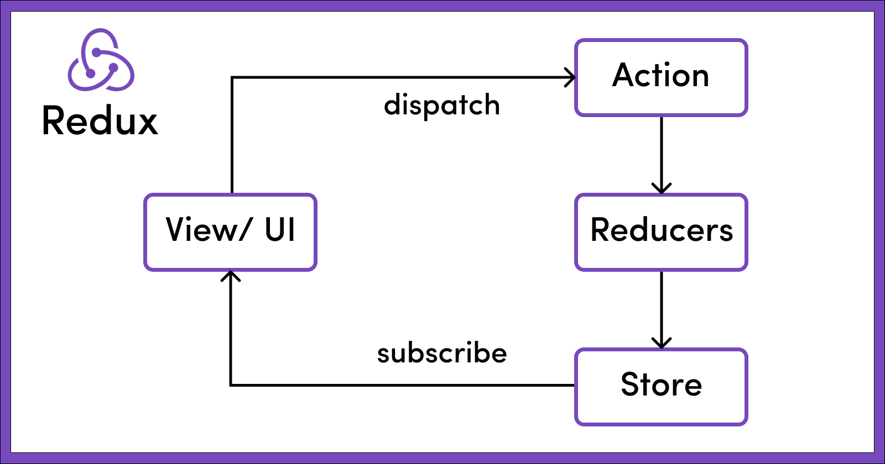

### Flutter Bloc “Programming is about managing complexity: the complexity of the problem, laid upon the complexity of the machine. Because of this complexity, most of our programming projects fail.” ― [Bruce Eckel](https://www.goodreads.com/quotes/9875145-programming-is-about-managing-complexity-the-complexity-of-the-problem) Jukka Nikki, Hopelessly Naive Programmer & Mutable Object
### Mandatory joke <img alt="state problem joke" src="images/state_problem_joke.png" width="80%">
## Why bloc? global mutable state is evil... but every app needs to manage state. if you fail on this, your app will fail.
### [Bloc rules, 1/3 (2018)](https://youtu.be/PLHln7wHgPE?t=1377) <img alt="bloc design guidelines" src="images/bloc_design_guidelines.png" width="60%"> bloc has simple api, injected dependencies, is platform independent, reactive programming recommended.
### [Bloc rules, 2/3 (2018)](https://youtu.be/PLHln7wHgPE?t=1377) features map to bloc (1:1), input (event) and output (state) defined by bloc, states are unambiguous.
### [Bloc rules, 3/3 (2018)](https://youtu.be/PLHln7wHgPE?t=1377) <img alt="tldr design guidelines" src="images/tldr_design_guidelines.png" width="50%"> bloc = logic, ui = interaction. Simple & Separated. 1:1. No exceptions! ".. for the sanity of everyone."
### Reactive programming Widget listens stream of states emitted by Bloc. Widget sends events to Blocs sink. Bloc works as events => states transformer. State is only changed by Bloc. Events are simple: Something has happened.
### [Reactive Flutter Bloc, 1/1 (2018)](https://www.youtube.com/watch?v=RS36gBEp8OI) It's all streams. Widgets position at widget tree is irrelevant. But may I suggest immutable objects?
### Bloc library (2019) <img alt="bloc architecture" src="images/bloc_architecture_full_white.png" width="60%"> Bloc library helps to implement BLoC pattern. Bloc Test library helps to write tests. Flutter independent and Flutter dependent libraries. Extensions like hydrated bloc and bloc concurrency.
TL;DR Bloc is a - way of separating presentation from business logic. - used to share state and control state changes. - uses sinks and streams as api. - transforms events to states. - enables reactive programming. - high quality bloc library available.
### Why immutability? “Immutable objects are simple. They can only be in one state, which is carefully controlled by the constructor. One of the most difficult elements of program design is reasoning about the possible states of complex objects. Reasoning about the state of immutable objects, on the other hand, is trivial." ― Brian Goetz, Java Concurrency in Practice
### [Immutable data? is it enough?](https://docs.google.com/presentation/d/14u_h-lMn7f1rXE1nDiLX0azS3IkgjGl5uxp5jGJ75RE/edit#slide=id.g2a5e9c4a8_05) Well, no.. We need value types. Immutable data is not enough. What can Dart offer?
### [Freezed: motivation](https://pub.dev/packages/freezed#motivation) <img alt="frrezed motivation" src="images/freezed_motivation.png" width="80%"> Missing language level value types is a problem, but generating code from annotations is a powerful fix.
### [Freezed: other fixes](https://pub.dev/packages/freezed#legacy-union-types-and-sealed-classes) <img alt="freezed unions" src="images/freezed_unions.png" width="80%"> Freezed can also generate sealed classes and union types. It is useful, but Dart 3 may be better solution.
### Immutable value types in dart - define a constructor + the properties - override toString, operator ==, hashCode - implement a copyWith method to clone the object - implement handling of de/serialization It's possible, but a bit tedious, and error prone. Freezed helps to generate immutable value types.
## Safe programming Programs are safer if we prevent hardcoded dependencies, shared mutable state, side effects, nulls and mixed responsibilities and instead use dependency injection, immutable objects, pure functions, null safety and single responsibility principle.
### Bloc library (2019?) <img alt="bloc architecture" src="images/bloc_architecture_full_white.png" width="60%"> Bloc library helps to implement BLoC pattern. - retrieve bloc and react to state changes - register event handlers and emit new states Bloc Test library helps to write tests. Flutter independent and Flutter dependent libraries.
#### Flutter - [Hello World](https://docs.flutter.dev/get-started/flutter-for/react-native-devs) ``` import 'package:flutter/material.dart'; void main() { runApp( /// UI is built with Dart code const Center( child: Text( 'Hello, world!', textDirection: TextDirection.ltr, ), ), ); } ``` The Center [widget](https://docs.flutter.dev/development/ui/widgets-intro) becomes the root of the widget tree and has one child, the [Text](https://docs.flutter.dev/development/ui/widgets/text) widget. Flutter UI is [composed](https://docs.flutter.dev/resources/architectural-overview#composition) in a flexible way from high amount of [simple single purpose widgets](https://docs.flutter.dev/resources/faq#can-i-extend-and-customize-the-bundled-widgets). It might look verbose, but it's precise and easy to understand.
#### [UI = f(state)](https://docs.flutter.dev/development/data-and-backend/state-mgmt/declarative) <img alt="flutter state mgmt" src="images/flutter-state-management.png" width="50%"> [Flutter is a reactive, pseudo-declarative UI framework](https://docs.flutter.dev/resources/architectural-overview). Developer provides a mapping from App state to UI state, and the framework updates UI at runtime when the App state changes. This model is inspired by [work that came from Facebook for their React framework](https://www.youtube.com/watch?v=x7cQ3mrcKaY&t=2s), which includes a rethinking of many traditional design principles.
#### [Compare: React / Redux One-way data flow](https://redux.js.org/tutorials/essentials/part-1-overview-concepts) <img alt="flutter state mgmt" src="images/one-way-data-flow.png" width="50%"> - State is condition of the app at a point in time - The UI is rendered based on that state - When something happens state is updated - The UI re-renders based on the new state
#### [Functional Reactive Programming (FRP)](https://quickbirdstudios.com/blog/what-is-functional-reactive-programming-frp/) Reactive libraries or programming languages… - allow you to easily express data flows. - automatically evaluate your data flows and propagate data changes.
#### [Excel explains .. ](https://quickbirdstudios.com/blog/what-is-functional-reactive-programming-frp/) <img alt="reactive excel" src="images/excel-reactive.jpg" width="50%"> functional and reactive programming - calculates stuff reliably (functional – same input, same output) - propagates changes through excel sheet (reactive – through defined data flows).
#### [Flutter element & render trees](https://docs.flutter.dev/resources/inside-flutter) <img alt="flutter ui tree" src="images/flutter-ui-trees-white.png" width="80%"> ["It would be a rare application that drew only a single widget. An important part of any UI framework is therefore the ability to efficiently lay out a hierarchy of widgets, determining the size and position of each element before they are rendered on the screen."](https://docs.flutter.dev/resources/architectural-overview#layout-and-rendering)
#### Compare: Reacts Virtual Dom [DOM operations are expensive](https://medium.com/technogise/dom-manipulation-in-browser-59b793bee559). React renders only diff of initial and updated [Virtual DOMs](https://blog.logrocket.com/what-virtual-dom-react/).
<img alt="flutter arch" src="images/flutter-architecture.png" width="50%"> ["extensible, layered system exists as a series of independent libraries that each depend on the underlying layer .. every part of the framework level is designed to be optional and replaceable."](https://docs.flutter.dev/resources/architectural-overview)
#### [Platform adaptation](https://docs.flutter.dev/resources/platform-adaptations) | Type | Description | | ----------- | ------------ | | automatic | prevents ‘wrong’ behavior for given OS (ex. scrolling, text input) | | supported | provides tools to implement OS conventions (ex. tabs, alert dialog) | most widgets don't [adapt automatically](https://docs.google.com/document/d/14mxhVeVk1lClPkBi6VmB260_7fKUlZTM-Vn1bOres7M/edit), but developer can decide to use [cupertino](https://docs.flutter.dev/development/ui/widgets/cupertino) ([iOS style](https://developer.apple.com/design/human-interface-guidelines/platforms/designing-for-ios/)) or [material](https://docs.flutter.dev/development/ui/widgets/material) ([Googles Open source style system](https://m3.material.io/)) widgets.
#### missing pieces? Flutter, like [React](https://reactjs.org/), is library for building user interfaces - it's very focused single purpose solution without compromises - some [1st party plugins](https://github.com/flutter/plugins) from flutter team are included - use them or not (very short list) - plenty of [3rd party plugins](https://pub.dev/) are also present - best are [flutter favorites](https://docs.flutter.dev/development/packages-and-plugins/favorites) (very long list) - and nothing prevents you from implementing your [own plugins](https://docs.flutter.dev/development/packages-and-plugins/developing-packages) (ask yourself: is it worth sharing?)
<img alt="dart toolchain" src="images/dart-platforms.svg" width="60%"> Dart is a client-optimized language for developing fast apps on any platform. ["During development .. apps run in a VM that offers stateful hot reload of changes without needing a full recompile. For release .. apps are compiled directly to machine code."](https://docs.flutter.dev/resources/architectural-overview)
#### [Dart](https://dart.dev/overview) - with C & [C#](https://www.toptal.com/dart/dartlang-guide-for-csharp-java-devs) & [JS](https://blog.codemagic.io/dart-vs-javascript/) & Java in Algol Family ``` import 'dart:math'; extension MyIterable on Iterable<int> { int get big => reduce(max); int get small => reduce(min); } void main() { var numbers = [25,42,13,40]; print('Solution is ${numbers.big}, not ${numbers.small}'); int? aNullableInt = null; print('Problem is $aNullableInt.'); } ``` Dart offers [sound null safety](https://dart.dev/null-safety) since 2.12, meaning that values can’t be null unless you say they can be. Extending classes is supported since Dart 2.7. Dart [Tiebo index = 35](https://www.tiobe.com/tiobe-index/) & [Github usage = 16](https://madnight.github.io/githut/#/pull_requests/2022/3). Try [DartPad](https://dartpad.dev/).
#### [Flutter platforms](https://docs.flutter.dev/development/tools/sdk/release-notes/supported-platforms) | Environment | Versions | | ------------ | -------- | | Android | API 16 (Android 4.1) & above | | iOS | iOS 11 & above | | Linux | Debian, 64-bit | | macOS | El Capitan (10.11) & above | | Web | Chrome >= 84, Firefox >= 72.0, Safari on El Capitan & above, Edge >= 1.2.0 | | Windows | Windows 7 & above |
#### [Migration projects: Native -> Flutter](https://www.youtube.com/watch?v=JVRPIittNaE) <img alt="native to flutter" src="images/migrating_native_to_flutter.png" width="65%"> Compiled dart code runs at host platform and accesses legacy native code using method channels.
#### [platform channel](https://docs.flutter.dev/resources/architectural-overview#platform-channels) <img alt="flutter platform channels" src="images/flutter-platform-channels.png" width="40%"> platform channel is a mechanism for communicating between your Dart code and the platform-specific code of your host app.
#### [C interop using dart:ffi](https://dart.dev/guides/libraries/c-interop) - use the [dart:ffi](https://api.dart.dev/stable/2.18.2/dart-ffi/dart-ffi-library.html) library to call native C APIs, and to read, write, allocate, and deallocate native memory. - use the [package:ffigen](https://pub.dev/packages/ffigen) binding generator to automatically create FFI wrappers from C header files. - how you bundle and load a C library depends on your platform and the type of library.
#### [Flutter has n State management options](https://docs.flutter.dev/development/data-and-backend/state-mgmt/intro) <img alt="state management" src="images/state-management-explainer.gif" width="80%"> Use [state management](https://docs.flutter.dev/development/data-and-backend/state-mgmt/intro) when you need to share application state between screens, across your app
#### [Compare: Reacts Redux store](https://www.freecodecamp.org/news/what-is-redux-store-actions-reducers-explained/) <img alt="state management" src="images/redux-store-usage-sharing-data.png" width="80%"> The state of the whole application is stored in the form of a JS object tree in a single [store](https://redux.js.org/api/store).
#### [Bloc library/pattern](https://bloclibrary.dev/#/architecture) <img alt="bloc architecture" src="images/bloc_architecture_full_white.png" width="60%"> Bloc attempts to make state changes predictable by regulating when a state change can occur and enforcing a single way to change state throughout an entire application.
#### [Compare: React / Redux / Flux](https://redux.js.org/)  Redux is a pattern and library for managing and updating application state, using events called "actions". Redux implements [Flux pattern](https://facebook.github.io/flux/docs/in-depth-overview/).
#### [MVVM anywhere?](https://en.wikipedia.org/wiki/Model%E2%80%93view%E2%80%93viewmodel) in "[MVVM (Model-View-ViewModel) pattern .. BLoC is the replacement for ViewModel](https://medium.com/@aaron.chu/flutter-state-management-bloc-pattern-9cd6011c699)." - [VM](https://developer.android.com/topic/libraries/architecture/viewmodel)(BLoC) is responsible for managing the state - [VM](https://developer.android.com/topic/libraries/architecture/viewmodel)(BLoC) uses Model (Repository) to access data Communication between V(UI) and [VM](https://developer.android.com/topic/libraries/architecture/viewmodel)(BLoC) has changed. [Stream](https://dart.dev/tutorials/language/streams) has replaced data binding.
#### [Example: Value of App Architecture](https://www.youtube.com/watch?v=JVRPIittNaE) Every system has architecture, planned or accidental, planned being mostly preferable. Pros & Cons depend on stakeholder, personal preferences, project & phase.
## Flutter Recap - [React](https://reactjs.org/)/[ReactNative](https://reactnative.dev/) have similarities to Flutter - Flutter UI is [reactive](https://docs.flutter.dev/resources/inside-flutter) and [declarative](https://docs.flutter.dev/get-started/flutter-for/declarative) - [UI's are composed](https://docs.flutter.dev/development/ui/layout) - [widgets](https://docs.flutter.dev/development/ui/widgets-intro) everywhere! - Dart is [typed](https://dart.dev/guides/language/type-system), [null safe](https://dart.dev/null-safety), [top 20](https://redmonk.com/sogrady/2022/10/20/language-rankings-6-22/) language - Dart enables [hot reload](https://docs.flutter.dev/development/tools/hot-reload), [JIT](https://dart.dev/tools/dart-compile) and [AOT](https://dart.dev/tools/dart-compile) - Usage of [native / foreign code](https://docs.flutter.dev/development/platform-integration/platform-channels) is supported - Architecture != State Management, you need both - [Bloc](https://bloclibrary.dev/#/) is popular [state management option](https://docs.flutter.dev/development/data-and-backend/state-mgmt/options) - Bloc works as [VM](https://developer.android.com/topic/libraries/architecture/viewmodel) at [Model-View-ViewModel](https://en.wikipedia.org/wiki/Model%E2%80%93view%E2%80%93viewmodel) - Starting with [Spike](https://wiki.c2.com/?SpikeSolution) / [PoC](https://en.wikipedia.org/wiki/Proof_of_concept) is good decision
# Simple over Complex Flutter example Counter app implemented using Bloc
#### [State management using Bloc](https://bloclibrary.dev/#/) <img alt="bloc arch" src="images/widget-bloc-communication.png" width="50%"> [Bloc](https://bloclibrary.dev/#/whybloc) separates [presentation](https://bloclibrary.dev/#/architecture?id=presentation-layer) from [business logic](https://bloclibrary.dev/#/architecture?id=business-logic-layer). Each Bloc has one input (sink) and output ([stream](https://dart.dev/tutorials/language/streams)), but can emit (output) several types of states and handle (input) several types of events. [Naming things](https://bloclibrary.dev/#/blocnamingconventions) consistently is vital.
#### [Example: Counter app](https://gist.github.com/felangel/fc8230776591f0297e6a1d1b5ef46a6c) <img alt="counter bloc app" src="images/counter_bloc_example_ui.png" width="80%"> "+" adds increment event to sink, counter is rendered when state is received from stream. [BlocProvider](https://pub.dev/documentation/flutter_bloc/latest/flutter_bloc/BlocProvider-class.html) controls lifecycle, [BlocBuilder](https://pub.dev/documentation/flutter_bloc/latest/flutter_bloc/BlocBuilder-class.html) rendering.
#### [Example: CounterApp](https://gist.github.com/felangel/fc8230776591f0297e6a1d1b5ef46a6c) ``` class CounterApp extends StatelessWidget { @override Widget build(BuildContext context) { return MaterialApp( home: BlocProvider( /// DI: always same bloc instance create: (_) => CounterBloc(), child: CounterPage(), ), ); } } void main() => runApp(CounterApp()); // Creation of app ``` [BlocProvider](https://pub.dev/documentation/flutter_bloc/latest/flutter_bloc/BlocProvider-class.html) takes care of creating single instance of [Bloc](https://pub.dev/documentation/bloc/latest/bloc/Bloc-class.html), lazily by default. Usage of [BlocProvider](https://pub.dev/documentation/flutter_bloc/latest/flutter_bloc/BlocProvider-class.html) loosely relates to Dependency Injection as concept.
#### [Example: CounterPage](https://gist.github.com/felangel/fc8230776591f0297e6a1d1b5ef46a6c) ``` class CounterPage extends StatelessWidget { @override Widget build(BuildContext context) { return Scaffold( appBar: AppBar(title: const Text('Bloc Counter')), body: Center( child: BlocBuilder<CounterBloc, int>( builder: (context, count) { return Text('$count', style: Theme.of(context).textTheme.headline1); },), ), floatingActionButton: FloatingActionButton( child: const Icon(Icons.add), onPressed:()=>context.read<CounterBloc>().add(Increment()), ),);}} ``` [BlocBuilder](https://pub.dev/documentation/flutter_bloc/latest/flutter_bloc/BlocBuilder-class.html) renders when state is read from stream. CounterBloc can be found with Context.read < blocType > and has [add](https://pub.dev/documentation/bloc/latest/bloc/Bloc/add.html) method which is sink for events.
#### Example: Widget Test ``` void main() { testWidgets('Counter++ test', (WidgetTester tester) async { await tester.pumpWidget(CounterApp()); // build, trigger frame expect(find.text('0'), findsOneWidget); expect(find.text('1'), findsNothing); await tester.tap(find.byIcon(Icons.add)); // tap '+' await tester.pump(); // trigger a frame expect(find.text('0'), findsNothing); expect(find.text('1'), findsOneWidget); }); } ``` [widget testing](https://docs.flutter.dev/cookbook/testing/widget/introduction) allows initiating actions and testing ui components state changes frame by frame.
#### [Example: CounterBloc](https://gist.github.com/felangel/fc8230776591f0297e6a1d1b5ef46a6c) ``` /// Base event and Increment Event abstract class CounterEvent {} class Increment extends CounterEvent {} /// handles converting `CounterEvent`s into `int`s. class CounterBloc extends Bloc<CounterEvent, int> { /// The initial state of the `CounterBloc` is 0. CounterBloc() : super(0) { /// When `Increment` event is added, /// current `state` is accessed via the `state` property /// and a new state is emitted via `emit`. on<Increment>((event, emit) => emit(state + 1)); } } ``` [Bloc 7.2.0 provides on < event > () registration method.](https://verygood.ventures/blog/how-to-use-bloc-with-streams-and-concurrency) Blocs super constructor sets initial state, CounterBlocs constructor defines handling of "Increment" using single expression lambda.
#### [Example: CounterBlocTest](https://gist.github.com/felangel/fc8230776591f0297e6a1d1b5ef46a6c) ``` void main() { group('CounterBloc', () { test('initial state is 0', () { expect(CounterBloc().state, 0); }); blocTest<CounterBloc, int>( 'emits [1] when increment is called', build: CounterBloc.new, act: (bloc) => bloc.add(Increment()), expect: () => [1], ); }); } ``` [bloc_test](https://pub.dev/packages/bloc_test) allows testing reactive code in isolation. Mocking, setup, delays, etc. are supported but not needed in this example.
#### Compare: Redux [Counter reducer](https://redux.js.org/tutorials/fundamentals/part-1-overview) ``` function counterReducer(state = initialState, action) { // Reducers usually look at the type of action that happened // to decide how to update the state switch (action.type) { case 'counter/incremented': return { ...state, value: state.value + 1 } // new copy default: // If the reducer doesn't care about this action type, // return the existing state unchanged return state } } ``` The store will run its reducer function and save the new state value. Reducers are [pure functions](https://www.geeksforgeeks.org/pure-functions-in-javascript/) that take the previous state and an action, and return the next state.
#### Compare: [Redux one-way dataflow](https://redux.js.org/tutorials/essentials/part-1-overview-concepts) <img alt="redux flow" src="images/redux-dataflow-diagram.gif" width="60%"> The only way to update the state is to call store.dispatch() and pass in an action object.
#### [Volatility-based decomposition](https://www.informit.com/articles/article.aspx?p=2995357&seqNum=2) identify and encapsulates areas of potential change. implement behavior as interaction between encapsulated areas. at app we can use features as one organizing principle - but how to identify and name them? - and should they be coarse or fine granular? goal => high [cohesion](https://en.wikipedia.org/wiki/Cohesion_(computer_science)), low [coupling](https://en.wikipedia.org/wiki/Coupling_(computer_programming)#Semantic_coupling), ..
<img alt="bloc as part of arch" src="images/flutter-bloc-architecture-layers.png" width="70%"> [layers](https://github.com/devonfw-forge/devon4flutter-non-bloc-arch/wiki/220-BLoC)
[layers and packages](https://github.com/devonfw-forge/devon4flutter-non-bloc-arch/wiki/220-BLoC)
<img alt="single feature" src="images/lib_feature_structure.png" width="30%"> lib:features, packages:domain/repository, data/client
#### [summary of organizing principles](https://verygood.ventures/blog/very-good-flutter-architecture) lib contains presentation - features match to functional requirements - found from software design and named clearly packages contains domain and data - domain layer consists of repositories - repositories transform raw data to apps domain - data layer consists of clients - clients are built to be reusable
#### Design: [Simple](https://www.infoq.com/presentations/Simple-Made-Easy/) over [complex](https://www.infoworld.com/article/3639050/complexity-is-killing-software-developers.html) [.. value the items on the left more](https://agilemanifesto.org/) - Types: Static/Safe over Dynamic/Nullable - State: Immutable over Mutable - Flow: One-Way/Events&Streams over bidirectional - Presentation: Code over Templates - Rendering: Reactive/[Declarative](https://docs.flutter.dev/get-started/flutter-for/declarative) over Imperative - Components: Composition over Inheritance - Libraries: Focused/Small over Multipurpose - Structure: Modular/Layered over Unstructured - Programming: Generation over Coding
#### Simple over Complex Recap - harden code using strong typing - shorten feedback loops using small tests - use one-way flows to help reason code - only support immutable data at ui - don't use templates, use code - render changes same way as initial values - use simple components - write code only when absolutely necessary - organize code to minimize ripple effect - use uniform programming model in whole app
“Simplicity is prerequisite for reliability.” “Programming, when stripped of all its circumstantial irrelevancies, boils down to no more and no less than very effective thinking so as to avoid unmastered complexity, to very vigorous separation of your many different concerns.” “If debugging is the process of removing software bugs, then programming must be the process of putting them in.” ― Edsger W. Dijkstra
#### History / Presentations - [React: rethinking best practices, 10/2013](https://www.youtube.com/watch?v=x7cQ3mrcKaYx) - [Flux: Rethinking Web App Development, 5/2014](https://www.youtube.com/watch?v=nYkdrAPrdcw&list=PLb0IAmt7-GS188xDYE-u1ShQmFFGbrk0v) - [Open the Sky, 23.10.2014](https://github.com/flutter/flutter/commit/00882d626a478a3ce391b736234a768b762c853a) - [Sky Demo, 4/2015](https://www.youtube.com/watch?v=PnIWl33YMwA) - [The Mahogany Staircase - (..) Layered Design, 3/2016](https://www.youtube.com/watch?v=dkyY9WCGMi0) - [Flutter's Rendering Pipeline, 5/2016](https://www.youtube.com/watch?v=UUfXWzp0-DU) - [Flutter: Dart Developer Summit 2016, 10/2016](https://www.youtube.com/watch?v=Mx-AllVZ1VY) - [Flutter: (..) UI framework for tomorrow (..), 9/2017](https://www.youtube.com/watch?v=VUiVkDpikDI) - [Flutter: The Best Way to Build for Mobile?, 10/2017](https://www.youtube.com/watch?v=1BXg4wfB9pA) - [Early Success Story, 2018](https://medium.com/kinandcartacreated/flutter-the-skys-the-limit-84887c8f650d)
## More - [State of Flutter & Dart](https://redmonk.com/jgovernor/2022/05/16/flutter-propels-dart-frameworks-language-adoption-and-cross-platform-development/) - [Flutter & Ubuntu](https://ubuntu.com/blog/flutter-and-ubuntu-so-far) - [Awesome Flutter](https://github.com/Solido/awesome-flutter) - [Riverpod and Bloc comparison](https://otakoyi.software/blog/riverpod-and-bloc-packages-comparison) - [Crossing the chasm](https://www.hightechstrategies.com/crossing-the-chasm-summary/)
## Examples - [wisgen, 2019, no null safety used](https://github.com/Fasust/wisgen) - [i/o Pinball, 2022](https://verygood.ventures/success-stories/i-o-pinball) - [ranch game, 2022](https://verygood.ventures/blog/very-good-ranch-game)
#### Tradeoffs / Fears / .. - ✗ [Additional layer on top of native adds complexity](https://betterprogramming.pub/why-flutter-isnt-the-next-big-thing-e268488521f4) - ✗ ReactNative and Native development will win - ✗ Googles [pet sematery](https://killedbygoogle.com/) waiting? - ✓ [Google has a clear financial incentive to invest in adoption of a cross platform language](https://redmonk.com/jgovernor/2022/05/16/flutter-propels-dart-frameworks-language-adoption-and-cross-platform-development/)
#### ["Architecture is about the important stuff. Whatever that is." - Ralph Johnson](https://martinfowler.com/architecture/) - Within the Flutter community, [State Management](https://docs.flutter.dev/development/data-and-backend/state-mgmt/intro) and [Architecture](https://martinfowler.com/architecture/) are often used synonymously - [Any architecture for a Flutter application](https://github.com/devonfw-forge/devon4flutter-non-bloc-arch/wiki/200-Architecting-a-Flutter-App#state-management-vs-architecture) will have [some sort of State Management](https://docs.flutter.dev/development/data-and-backend/state-mgmt/options) - [State Management](https://docs.flutter.dev/development/data-and-backend/state-mgmt/intro) is not an [architecture by itself](https://bloclibrary.dev/#/architecture), even if [bloc library](https://bloclibrary.dev/) documentation contains [architecture proposition]((https://bloclibrary.dev/#/architecture)). - Compare: [Redux](https://redux.js.org/), Reacts state management solution
## DX: Nulls Mentioned native and multiplatform languages are statically typed with native null safety support - C# (Xamarin, .net MAUI, Unity) - Dart (Flutter) - Kotlin (Android Native, Compose Multiplatform) - Swift (iOS Native) https://en.wikipedia.org/wiki/Nullable_type Duck typing is kinda not static and not very safe. JS & ES & TS can be used in evil ways. With power comes responsibility.
#### [Native development still common. Jetbrains 2021](https://www.jetbrains.com/lp/devecosystem-2021/miscellaneous/) <img alt="native devs" src="images/jetbrains-survey-native-use-2021.jpeg" width="45%"> <img alt="native platforms" src="images/jetbrains-survey-native-platform-development-2021.png" width="45%"> It's hard to say how much of native development could be replaced with multiplatform. It's possible that you needed native 3 years ago, but there's options now. Try it out.
#### [Sources: by layer/type+domain](https://github.com/devonfw-forge/devon4flutter-non-bloc-arch/wiki/400-Conventions) ``` lib | ├── blocs ├── data ├── models ├── repositories ├── ui | ├── pages | | ├── home_page.dart | | └── ... | └── widgets | ├── image_card.dart | └── ... └── main.dart ``` Stick to one way of organizing files: [by feature/type](https://medium.com/flutter-community/scalable-folder-structure-for-flutter-applications-183746bdc320) is viable option if features can be clearly defined
#### [S-curve](https://sketchplanations.com/the-s-curve): Native -> *Platform <img alt="s-curve" src="images/s_curve.png" width="60%"> - Experts of current game know rules and limitations - Changing game is not easy and contains risks
#### [Chasm](https://sketchplanations.com/understanding-the-chasm): Change -> Productivity <img alt="chasm" src="images/chasm.png" width="60%"> - Visionaries thrive for change and tolerate difficulties - Pragmatists follow if it is proven to work for them